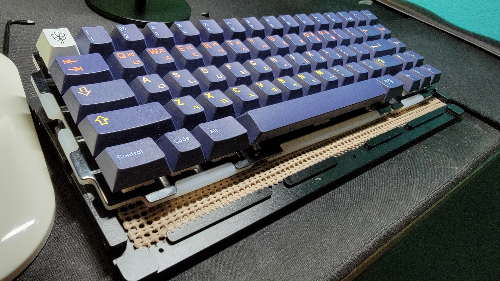
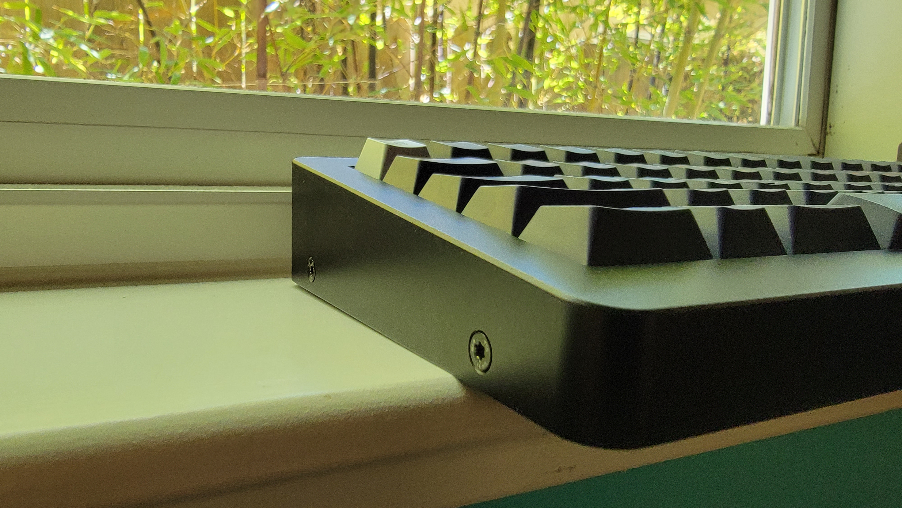
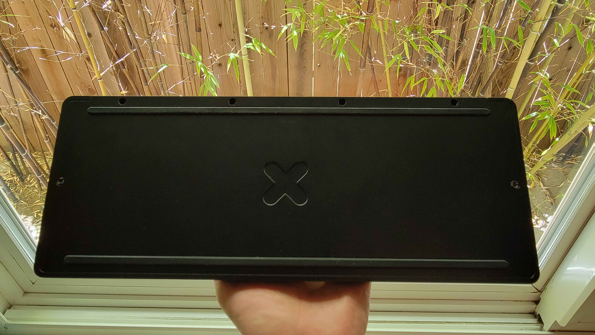
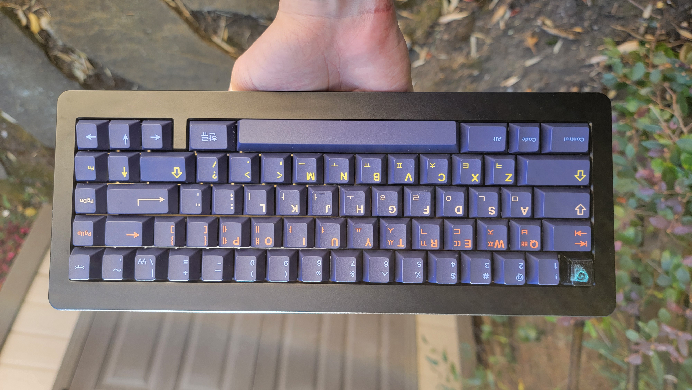

May 23, 2022
Contents
Introduction:
I had originally purchased this board in order to replace my Mode Eighty during the summer of 2021. The TKL layout was too big for my desk setup and I wanted to move towards a smaller layout, so I landed at the 65%.
The RAMA M65-B is an stunning keyboard with a very distinct sound signature. In a 65% keyboard market dominated by budget boards like the QK65 and Bakeneko65, the M65-B gives you what you pay for and finds itself in a space within the market which isolates itself from other gasket-mount & PE foamed keyboards.
Interior:
The MUTE mount is best described as an augmented gasket mount. Instead of using Poron or other common gasket materials, the MUTE mount uses a layer of silicone that goes in between the plate and PCB, similar to that of plate foam. This silicone layer then also acts as a gasket that is sandwiched in between two metal contacts from the top piece and the bottom piece. This allows the keyboard to have a unique deep sound signature.
With the brass plate and the amount of screws used to keep the top and bottom enclosures together, the M65-B doesn’t offer the most flexible typing experience. I imagine that with a PC plate or even an aluminum plate the typing would be a little more forgiving, but with the brass plate, it can feel a little harsher in comparison to the more common gasket mount with aluminum plate.
On the inside of the bottom case, there is a slot where you can insert either a weight or a silicone dampener. According to RAMA, using the optional interior weight adds resonance and heft, whereas using the interior dampener will absorb more sound for a different sound signature. I had purchased neither, and decided to use my own shelf liner to act as a replacement for the dampener. Assuming shelf liner would act very similar to the dampener, I decided to save the $50 and stick with it.
The shelf liner worked just as I imagined. Similar to foam in a way, the shelf liner acts as a filler for the keyboard, allowing it to sound less hollow without too much dampening, which the MUTE mount will take care of.
Exterior:
The case is iconic in its own right. RAMA keyboards have been known for their thick rounded bezels in the past, like in the U80 and the previous iteration of the M65. I’m a fan of the bezels, as they give the keyboard a little more character. However, the bottom side of the M65-B isn’t anything special. The RAMA logo is engraved here, and you can also see the screws that are used to hold the top and bottom pieces together. I don’t mind seeing the screws on the bottom, however the screws on the side were something I wish wasn’t there. I prefer a cleaner look and wish that these screws weren’t necessary.
The typing angle is steeper than normal, at 8° instead of something more traditional around 6°. This may make it feel like the front height is taller than normal, but the front height is about the same as some of the other boards I’ve reviewed (Mode Eighty, Owlab Spring).The steeper typing angle can be a little uncomfortable, but the addition of a wrist rest can offset this.
Sound/Feel (& switches)
The Boba U4T is close to the pinnacle of what a tactile switch should be. The tactile bump is rounded versus the sharper bump of a Holy Panda, but not so rounded to the point of Topre or rubber dome. The sound is deeper and cleaner than other JWK tactiles, and the push feel is as smooth as you would like out of a tactile switch. It’s simply a bump, and then a slight resistance from the spring. There’s very little friction between the stem and the housing, especially after lubing. Overall, one of the nicest switches I’ve used period, and the first tactile switch I would recommend.
In this build, the switches were lubed with Tribosys 3203, with the legs lightly lubed. Lubing these aren’t necessary, but offer a significant enhancement in comparison to the switches stock. The springs were the biggest improvement here, as they had a lot of pinging prior to lubing even though the factory springs were donut dipped in lube already. As stated before, there wasn’t a lot of friction from the sliders stock, however the lube essentially removes it all. Lubing the legs made the switch feel more rounded than it needs to be, so I can’t recommend doing so unless that’s what you’re looking for. I would use Tribosys 3203 or other thinner lubes as it can be unforgiving to use Krytox 205g0 with tactiles.
These were also filmed with Dangkeebs Gasket Switch Films, which were added because I wanted to try to make the switch sound deeper. I wouldn’t recommend filming these switches as the tolerance between the housings is already extremely tight and the added benefit is extremely minimal. In addition, it was a pain to make sure that every single film fit, as it took a fair amount of force to close every single housing together. However, if the slight change in sound seems to be worth it, films are worth a consideration.
Here's a sound test:
I’ve also included a sound test for a linear build with PE foam and Original Aspiration switches (a JWK linear), and you can see how the keyboard can sound deep even with PE foam.
For sound, the brass plate offers a little more clack to offset the dampening done by the MUTE mount, and on the other side, the MUTE mount allows the sound to remain deep even with the brass plate. The two work well here to allow the U4T to have a nice clack to it. With the linear build on the brass plate, you would expect there to be a decent amount of clack and that “marbly” sound from the PE foam. However, the MUTE mount really shows that it can still maintain a deeper sound signature, showing how effective it can be to stay at a lower pitch.
In terms of feel, versus something like FR4, the brass plate allows the tactile bumps to be accentuated. This is to be expected out of a rigid metal like brass versus a more flexible plastic plate material, though. Putting U4Ts in the Owlab Spring didn’t feel right, especially using FR4. It made the switch feel a little more muddy and rounded than I would like from a tactile switch because of the more flexible plate. In the M65-B, the typing experience felt like a true tactile experience, you feel every single actuation and every input is intentional. The brass plate in combination with the MUTE mount makes for a stiff feel, but that’s not a bad thing, as you might look to maintain a more tactile bump with the U4Ts.
With linears, however, I prefer to use a plastic plate, so the brass plate felt a little too harsh to type on for extended periods of time. After a couple of weeks, I had gotten used to it, but I would recommend using a PC or an aluminum plate. With the MUTE mount, it does not allow for enough give with the push feel in order to compensate for the stiffness of the brass material. If you were to use PC instead, you could further deepen the sound of the linears, or if you wanted to keep a little bit of clack, aluminum would function perfectly fine, as it is still a metal plate while not being as stiff as brass.
Closing & Comparisons
The theme of the RAMA M65-B is premium. From the PCB, the plate, and MUTE mount, to the overall look of the case, the M65-B is an overall excellent package of a 65% keyboard. Its unique mounting style and design aesthetic is what makes it a premium kit, while separates it from the rest of the 65% crowd. With this plate/mounting style combination, you can achieve a unique sound, maintaining clack from the Boba U4Ts and utilizing the MUTE mount to lessen the harshness of the brass plate. This can be much more difficult to replicate with simply foam, and what makes this keyboard find its own space in the market.
However, all of these features also do come at a premium. At $390 USD, you start to pay somewhere close to 2x the price of the Bakeneko and the QK65. In addition, within this price range, customers will look at future runs of the Vega and the Mode Sixtyfive, both of which are excellent sounding keyboards. This starts to make customers think about whether the RAMA aesthetic is for them. Both the Vega and the Mode Sixtyfive are keyboards that people would consider endgame, and the question lies if whether or not the M65’s traits align with the image of an endgame keyboard. If you looking for this particular aesthetic with larger bezels and a deeper sound signature without relying completely on foam, consider the M65-C in a future group buy. Otherwise, something more traditional like the Mode Sixtyfive or even going down in price range to a QK65/Bakeneko could be a very viable option.
Overall, I really enjoyed using this keyboard. I have since moved away from the 65% layout, however the M65-B was the board that I used as my daily driver for almost 8 months. I still revisit this board, use it on occasion to get a nice dose of the RAMA aesthetic, and you never know, maybe it will see itself as a daily driver once again.
Thanks for reading,
Justin